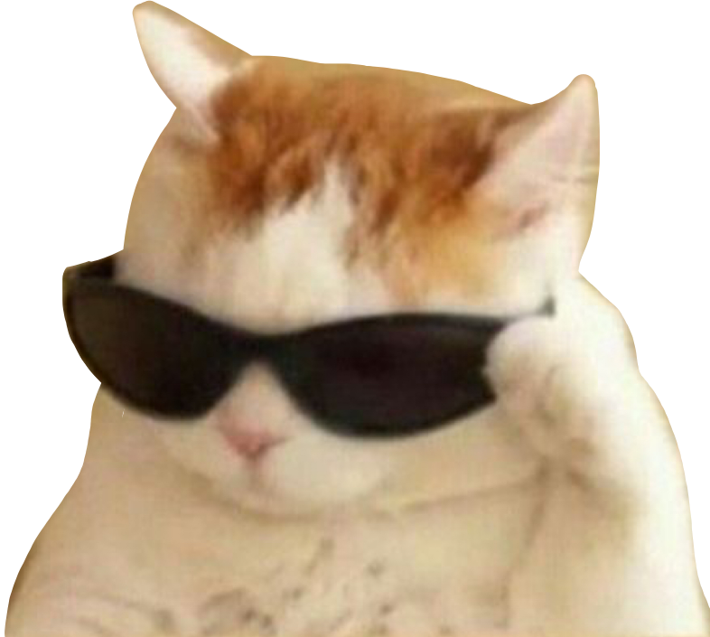
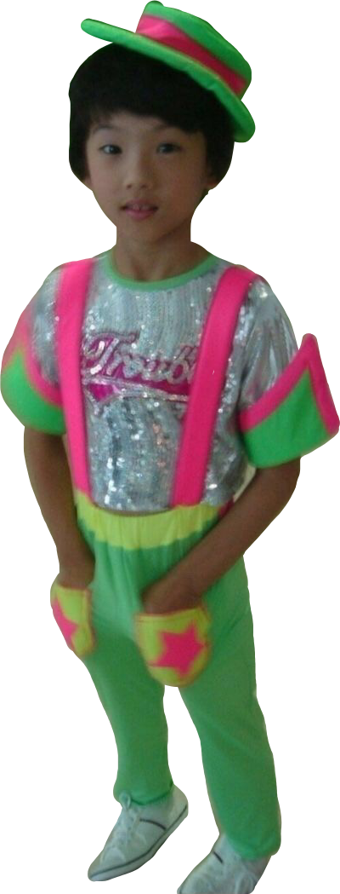
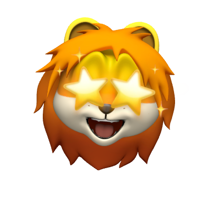

안녕하세요 컴퓨터공학과 20학번 00년생 김도연입니다!
컴퓨터공학을 전공하고 있지만 코딩 실력은 아직 많이 부족합니다ㅜㅜ
이번 멋사 활동을 통해 코딩 실력도 향상시키고
재미있는 추억도 많이많이 쌓고 싶습니다!

우선 저는 맛있는 음식을 사랑합니다!
해산물을 안좋아해서 생선회는 못먹지만 육회는 좋아해요..!- 최근에는 쿠키런 킹덤을 자주 하고 있어요!
저는 슈크림맛 쿠키 보유자랍니다,,^^
- 
- 아이돌도 좋아합니다!
잘생긴게 최고,,^^

9기 아기사자로 활동할 수 있게 되어서 너무너무 기뻐요!
1년 동안 열심히 활동하겠습니다! 다들 잘부탁드립니다~!~!